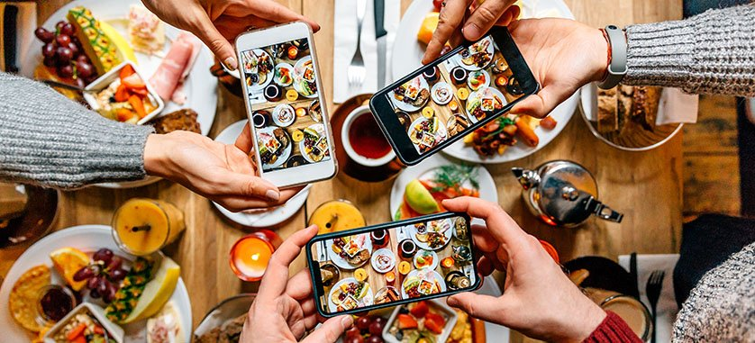
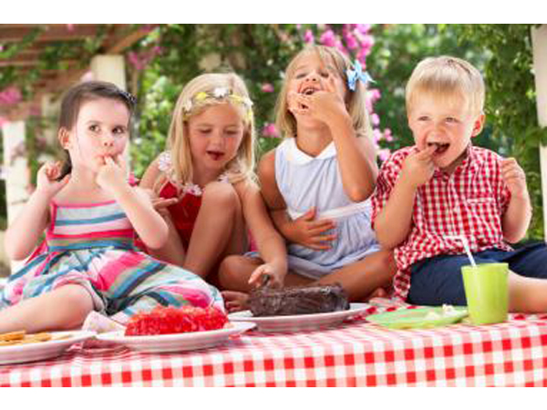

Activités
Cuisine Conviviale
Tous les Samedis midis, de 11h à 14h préparations des recette élaborées par nos chefs bénévoles et desgusation collégiale. Vous pouvez venir en famille ou entre amis.

Gouter bambins
Le dimanche, préparation du gouter pour les enfants l'après midi. Gateaux, biscuits, jus maisons, tout est bon! N'hésitez pas à inviter les amis de vos enfants.
